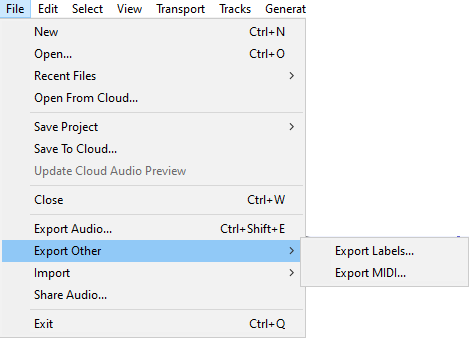
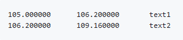
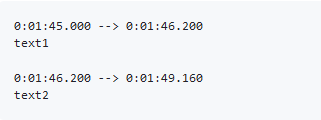

File Menu: Export Other
- 
Export Labels
If you have any Label Tracks, this command will, by default, export all their labels as a text file with extension .txt.
The text in each label appears as one line in the exported file, prefaced by the start time and end time of the label (in seconds). If you have multiple label tracks, the labels in the uppermost label track appear first in the file.
- 
To import the labels into an Audacity project later, use the command.
Export Labels is commonly used in speech transcription or speech recognition research, after which the files can be manipulated in any application that accepts text files. Labels can also be modified after export for use as Cue Sheets for CD burning or as movie subtitles.
This is non-default and needs to be turned on in Import / Export Preferences in the Exported Label Style box if you wish or need to use this.
If a label is created from a point or region in a Spectrogram track where Spectral Selection is enabled (or if a label is otherwise created when a low frequency and high frequency value are already stored in the project), the exported labels file also contains the frequency range for that label.| Export Labels cannot export selected label tracks or selections within label tracks.
To export individual label tracks the workaround is to:
|
Additional label export subtitle formats
You can optionally export labels in these other subtitle formats with this basic structure hh:mm:ss.ttt:
- SubRip text file with extension .srt
- WebVTT file with extension .vtt - useful for YouTube
- 
Export MIDI
Export the currently selected Note Track as a MIDI or Allegro file (which is like a MIDI file except that the notes information is stored as plain text). You can choose in the Import / Export Preferences whether to export Allegro files with times and durations represented in seconds (default) or in beats. Some applications that can play MIDI files may not be able to play Allegro files.
Only one Note Track can be exported at a time. The entire Note Track will be exported regardless of any selection made in the track. If the Note Track has been time shifted to start at a point other than zero, empty MIDI bars will be added at the start.